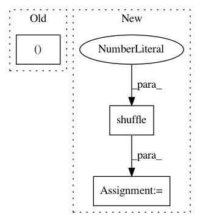

f2073333b710a340403843763ba60eb1e6699916,examples/data_process/tutorial_tfrecord2.py,,read_and_decode,#Any#,63
Before Change
img = tf.reshape(img, [32, 32, 3])
// img = tf.cast(img, tf.float32) //* (1. / 255) - 0.5 // don"t need to cast here, as it is float32 already
label = tf.cast(features["label"], tf.int32)
return img, label
img, label = read_and_decode("train.cifar10")
After Change
//// Read Data by Queue and Thread =======================================
def read_and_decode(filename):
batchsize = 4
raw_dataset = tf.data.TFRecordDataset([filename]).shuffle(1000).batch(batchsize)
for serialized_example in raw_dataset:
features = tf.io.parse_example(
serialized_example, features={
"label": tf.io.FixedLenFeature([], tf.int64),
"img_raw": tf.io.FixedLenFeature([], tf.string),
}
)
// You can do more image distortion here for training data
img_batch = tf.io.decode_raw(features["img_raw"], tf.uint8)
img_batch = tf.reshape(img_batch, [-1, 32, 32, 3])
// img = tf.cast(img, tf.float32) //* (1. / 255) - 0.5 // don"t need to cast here, as it is float32 already
label_batch = tf.cast(features["label"], tf.int32)
yield img_batch, label_batch
img_batch, label_batch = next(read_and_decode("train.tfrecords"))
print("img_batch : %s" % img_batch.shape)
print("label_batch : %s" % label_batch.shape)
In pattern: SUPERPATTERN
Frequency: 3
Non-data size: 3
Instances
Project Name: tensorlayer/tensorlayer
Commit Name: f2073333b710a340403843763ba60eb1e6699916
Time: 2019-04-11
Author: rundi_wu@pku.edu.cn
File Name: examples/data_process/tutorial_tfrecord2.py
Class Name:
Method Name: read_and_decode
Project Name: tensorlayer/tensorlayer
Commit Name: f2073333b710a340403843763ba60eb1e6699916
Time: 2019-04-11
Author: rundi_wu@pku.edu.cn
File Name: examples/data_process/tutorial_tfrecord.py
Class Name:
Method Name: read_and_decode
Project Name: hanxiao/bert-as-service
Commit Name: d97188ee62bc0627235578485c5df7d3245fa1ed
Time: 2018-12-02
Author: hanhxiao@tencent.com
File Name: example6.py
Class Name:
Method Name: